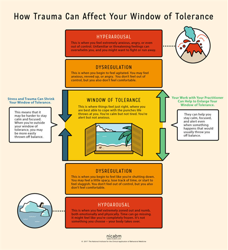

How the Boundary Moves: Expansion, Contraction, and Antifragility
What makes Choice Potential Theory distinctive is its treatment of the degree as a living, responsive boundary. It moves in predictable ways. Sustained approach pushes the boundary outward — you grow. Prolonged avoidance pulls it inward — your tolerance shrinks. Recovery after a boundary breach can produce antifragile expansion, where your capacity actually exceeds its previous range. But unrecovered breach leads to traumatic contraction, permanently narrowing what you can handle.
Two Types of Degree
The theory identifies two types of degree: an expansive degree (upper bound), representing the ceiling of what you can reach toward, and a convergent degree (lower bound), representing the floor of what you can endure. This lower bound corresponds closely to Dan Siegel's Window of Tolerance in clinical psychology. Society treats violations of these two boundaries asymmetrically — exceeding the upper bound is often celebrated as ambition, while falling below the lower bound is stigmatized as weakness.
